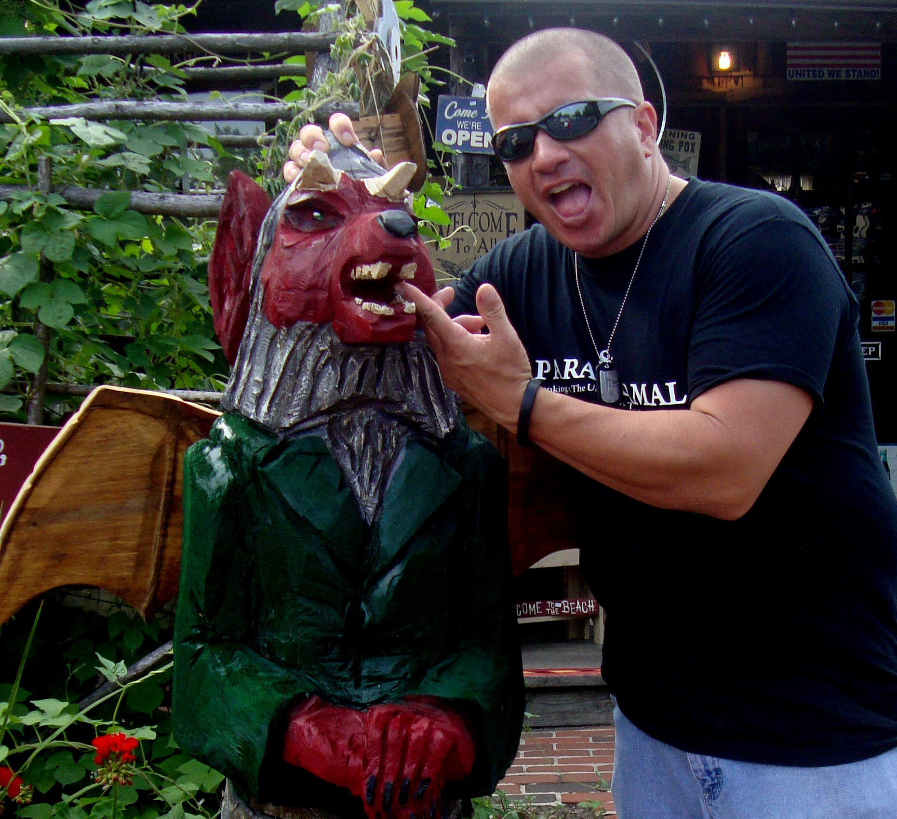
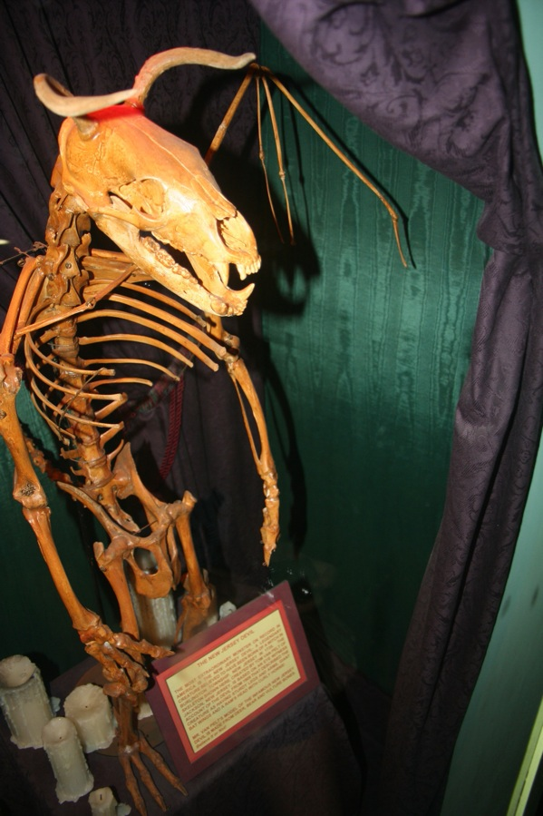

The Jersey Devil

"Jersey Devil Captured" by themechanism is licensed under CC BY-NC 2.0. To view a copy of this license, visit https://creativecommons.org/licenses/by-nc/2.0/?ref=openverse&atype=rich
Native to the Pines Barrow region of New Jersey, the Jersey Devil (also named the Leeds Devil in some accounts) is the name given to mysterious sightings reportedly as far back as the 18th century. The general consensus is that the Jersey Devil is a bipedal, winged, dragon with a furry body. It is said to have a forked tail, and is sometimes reported as breathing either fire or poison water from its mouth. The origin story of the Jersey Devil says that it was the thirteenth child of a witch, which cursed it to take on the grotesque form that would soon terrorize nearby towns. The story goes that the Devil would snatch away children and eat them, though no confirmed reports exist.

"826 Paranormal with the wood carving of the Jersey Devil" by 826 PARANORMAL is licensed under CC BY-NC 2.0. To view a copy of this license, visit https://creativecommons.org/licenses/by-nc/2.0/?ref=openverse&atype=rich
As the years went on, the sightings attributed to the Jersey Devil became more and more diverse. Sometimes it takes the form of a Chupacabra-like hybrid between dog and lizard, sometimes a more dragon-esque flying reptile, and even the occasional impish, bipedal humanoid that one might imagine would be called a "devil". We have had several reports come in of Jersey Devils by our readers, though they continue to have enough differences between them for us to not be able to pin down a definitive form for it. We have come to the conclusion that these accounts are largely speaking about two or three different creatures, and then the Jersey Devil tag gets associated with all of them due to its regional infamy. We are currently in the process of writing up a more definitive report on each of these Jersey Devil-derivatives, and will update everyone on our mailing list as soon as it is finished.
The Jersey Devil has had a huge fandom form around it. Perhaps the best known reference to it is the 3-time Stanely Cup Champion: New Jersey Devils. There have also been seveal cult-classic horror movies centered around various incarnations of the Devil, and even a roller coaster named after it.